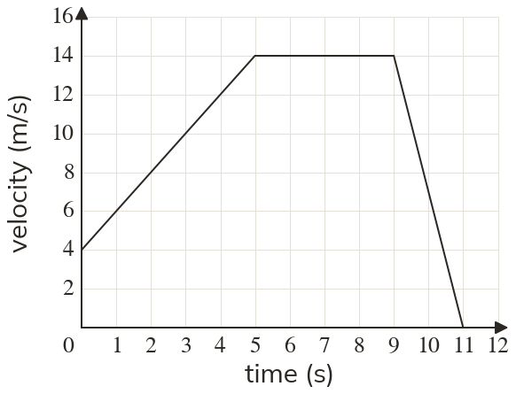

Westonbirt Maths · Distance-Time and Conversion Graphs
Velocity-Time Graphs
Name: ______________________ Date: ____________
1
Find the acceleration in each stage.
2
A car speeds up from rest to m/s in seconds. Find its acceleration.
3
A velocity rises from m/s to m/s between and seconds. Find the acceleration.
4
A bike slows from m/s to m/s in seconds. Find the acceleration.
5
A bike speeds up from rest at m/s² for seconds. Find its final velocity.
Ext
A car moving at m/s decelerates at m/s²
How long does it take to stop?
How long does it take to stop?
